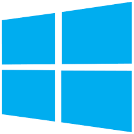

Windows 8
O Windows 8 é uma versão do Microsoft Windows, uma série de sistemas operacionais desenvolvidos pela Microsoft para computadores pessoais, laptops e tablets. É o sucessor do Windows 7. Foi anunciado oficialmente por Steve Ballmer, diretor executivo da Microsoft, durante a conferência de pré-lançamento do sistema operacional. O Windows 8 Developer Preview, primeiro a beta para o público, no dia 13 de setembro de 2011, sendo seguida pela versão Consumer Preview no dia 29 de fevereiro de 2012. No dia 31 de maio de 2012, foi liberada para download a versão Windows 8 Release Preview. A versão final foi lançada mundialmente em 26 de outubro de 2012.[6]O Windows 8 foi substituído pelo Windows 8.1.
O Windows 8 introduziu grandes mudanças na plataforma e na interface para melhorar a experiência de usuário em tablets, já que o Windows agora competia com sistemas operacionais móveis, o Android e o iOS. Essas alterações incluíram um Windows Shell otimizado para o toque baseado na linguagem de design Metro UI da Microsoft e na nova Tela Iniciar (que exibe aplicativos e conteúdos atualizados dinamicamente em uma grade de Live Titles), uma nova plataforma para o desenvolvimento de "aplicativos" com ênfase na entrada touchscreen, integração com serviços online (incluindo a capacidade de sincronizar aplicativos e configurações entre os dispositivos) e adição da Windows Store, um serviço de distribuição on-line para download e compra de novos softwares que são executados na Tela Iniciar. Muitos desses recursos foram inspirados pelo Windows Phone. O Windows 8 também adicionou suporte para USB 3.0, discos rígidos de formato avançado, comunicação por campo de proximidade (NFC) e computação em nuvem. Recursos adicionais de segurança foram introduzidos, como software um antivírus embutido, integração com o serviço de filtragem de phishing, Microsoft SmartScreen e suporte para o UEFI Secure Boot em dispositivos suportados com firmware UEFI, para evitar que um malware infecte o processo de inicialização.
O Windows 8 foi lançado para uma recepção crítica mista. Reações positivas relacionadas melhorias de desempenho, melhorias de segurança e melhor suporte para dispositivos sensíveis ao toque foram positivas porém a nova interface de usuário do sistema operacional foi amplamente criticada por ser potencialmente confusa e de difícil usabilidade, especialmente quando usada em um dispositivo com teclado e mouse em vez de uma tela sensível ao toque. Apesar dessas deficiências, 60 milhões de licenças do Windows 8 foram vendidas até janeiro de 2013, um número que incluía upgrades e vendas para OEMs para novos PCs.
Requisitos Mínimos de Sistema
Processador de 1GHz com suporte a PAE, NX e SSE2
1GB (32 bits) ou 2GB (64 bits) de memória
DirectX 9
16GB (32 bits) ou 20GB (64 bits) de armazenamento
Acesso à internet
Resolução de tela de 1024 X 768
Tablets e conversíveis
A Microsoft anunciou os requisitos mínimos de hardware para o novo tablet e dispositivos conversíveis projetados para o Windows 8, e definido um fator de forma conversível como um dispositivo autônomo que combina o PC, monitor e fonte de energia recarregável com um teclado mecânico em anexo e dispositivo apontador em um único chassi. Um conversível pode ser transformado num comprimido, onde os dispositivos de entrada estão conectados escondidos ou removidos, deixando o monitor como o mecanismo de entrada única
Críticas
Outra crítica foi em relação ao visual do sistema operacional em modo de Área de Trabalho. O sistema apresenta janelas com bordas retangulares, diferentes das de seus antecessores Vista e 7, que continham bordas arredondadas. O Windows 8 perdeu outra característica inovadora, o Windows Aero, presente nas versões Vista e 7, deixando as barras superiores das janelas sem transparência e centralizando seus títulos, o que gerou certo desconforto visual para alguns usuários (a transparência pode ser gerada por softwares baixados na internet, porém podendo apresentar bugs).
Imagens
 Logo do Windows 8 Menu Iniciar do Windows 8Windows 8.1
O Windows 8.1 (codinome Windows Blue[3]) é uma versão do Microsoft Windows, série de sistemas operacionais comercializados pela Microsoft para computadores, tablets e laptops. Foi o sucessor do Windows 8. Foi anunciado no dia 14 de maio de 2013 e a versão final foi lançada e disponibilizada para consumidores e para o público em geral em 17 de outubro de 2013. A nova versão foi disponibilizado para download via MSDN e Technet e disponível como uma atualização gratuita para todos os usuários do Windows 8 e Windows RT através da Windows Store.
O Windows 8.1 visava resolver reclamações de usuários do sistema operacional anterior, o Windows 8. Os aprimoramentos visíveis incluem uma Tela Iniciar melhorada com novas opções de personalização das Live Titles, adição de novos aplicativos na interface Metro, integração com OneDrive, lançamento do Internet Explorer 11 (IE11), um sistema de busca aprimorado integrado com o Microsoft Bing e um Painel de Controle da Metro UI mais completo. O Windows 8.1 também adicionou suporte para novas tecnologias como displays de alta resolução, impressoras 3D, Wi-Fi Direct, streaming via Miracast, sistema de arquivos ReFS além correções de compatibilidade e bugs do sistema anterior. Em 12 de janeiro de 2016, a Microsoft anunciou que os usuários do Windows 8 precisariam atualizar para o Windows 8.1 ou Windows 10 para suporte contínuo.
O Windows 8.1 recebeu uma recepção mais positiva que o Windows 8, com os críticos elogiando as novas funcionalidades de personalização em comparação ao outro sistema, sua integração com o OneDrive, seus ajustes na interface do usuário e a adição de tutoriais para melhorar a experiência também foram elogiados. Apesar dessas melhorias, o Windows 8.1 ainda foi criticado por não corrigir todos os problemas do Windows 8, como a péssima integração entre aplicativos no estilo Metro e na interface de desktop e implicações de privacidade do uso serviços de online. Em outubro de 2020, 4,16% dos PCs do mercado estavam executando o Windows 8.1.
Desempenho
O desempenho do Windows 8.1 é bastante aceitável, trás mais estabilidade comparado a outras versões do Windows. Ele corrige vários bugs de desempenho do Windows 8 comum, além dessas novidades, trás um desempenho excelente sem utilizar drivers de vídeo, como foi feito para tablets principalmente, ele funciona normalmente em computador que pode ter o hardware até 4 vezes melhor. Um exemplo de tablet com hardware modesto, mas que funciona bem com o sistema é o Lenovo Miix 300.
Idiomas
O Windows 8.1 está disponível em vários idiomas; porém, o Windows RT 8.1 roda apenas alguns destes.
A recepção crítica
O Windows 8.1 recebeu críticas melhores do que o Windows 8 Tom Warren do The Verge ainda considerada a plataforma a ser um "work in progress", devido ao número de aplicativos disponíveis, o nível de deficiência de recursos que os aplicativos têm em comparação com programas de desktop, e porque ele sentiu que a navegação com mouse e teclado ainda era "estranho". No entanto, ele elogiado muitas das grandes mudanças no 8.1, tais como a funcionalidade tirando expandido, aumento Iniciar tela de personalização, SkyDrive e integração Bing, melhorias para aplicativos de ações e, particularmente, ele considerou a aplicação Correio para ser "anos-luz à frente" do original versão de 8 Ele concluiu que "A Microsoft conseguiu um lote dentro de 12 meses, mesmo que um monte de adições se sentem como se deveria ter estado lá desde o início com o Windows 8"
Suporte
A migração necessária do Windows 8 para o Windows 8.1 para clientes até 12 de Janeiro de 2016.[carece de fontes], tanto como o suporte base do Windows 8 encerra em 09 de Janeiro de 2018 e o seu suporte estendido encerra em 10 de Janeiro de 2023, o Windows 8.1 seguirá o mesmo "ciclo de vida de suporte" do Windows 8. Sendo assim, por causa do Windows 8.1 lançado em 17 de Outubro de 2013, apesar do Windows 8 (8.0) ter este ciclo de vida, seria a acabar no período de Service Pack anterior em 12 de Janeiro de 2016 como se fosse um Service Pack anterior (8.0), e o Windows 8.1 como se fosse o mais recente. Sendo assim, significa que são os clientes do Windows 8 que serão necessitado a migrar (do 8.0) para 8.1 para manter com ciclo de vida de suporte do Windows 8, apesar dos dois terem o mesmo ciclo de vida de suporte sem significar que por geral do Windows 8 (o 8.0) simplesmente acabar o suporte dele em 12 de Janeiro de 2016, como se fosse antecessor do 8.1 como título anterior, sendo assim, é o Windows 7 que é do título anterior do dono do título, Windows 8 [(8.0) e 8.1].